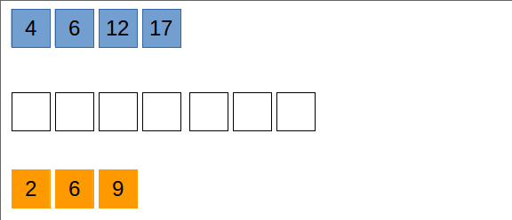

Considerăm două tablouri unidimensionale cu elemente numere întregi ordonate crescător. Se dorește construirea unui alt tablou,
care să conțină valorile din cele două tablouri, în ordine.
O soluție foarte eficientă este interclasarea:
n, respectiv m elemente, ordonate crescătorp = n + m elemente
int n,a[100000], m , b[100000], p, c[200000];
//citire a[] cu n elemente
//citire b[] cu m elemente
int i = 0 , j = 0;
p = 0;
while(i < n && j < m)
if(a[i] < b[j])
c[p ++] = a[i ++];
else
c[p ++] = b[j ++];
while(i < n)
c[p ++] = a[i ++];
while(j < m)
c[p ++] = b[j ++];
Observație: Doar una dintre instrucțiunile while(i < n)... și while(j < m)... se va executa,
deoarece exact una dintre condițiile i < n și j < m este adevărată. În prima structură repetitivă, la
fiecare pas, doar una dintre variabilele i și j se mărește, deci la final una dintre condiții este adevărată
și una este falsă.
Algoritmul de interclasare este foarte eficient. El are complexitate O(n+m). De asemenea, este
posibilă și interclasarea valorilor din două fișiere, singura condiție este ca valorile să fie ordonate.